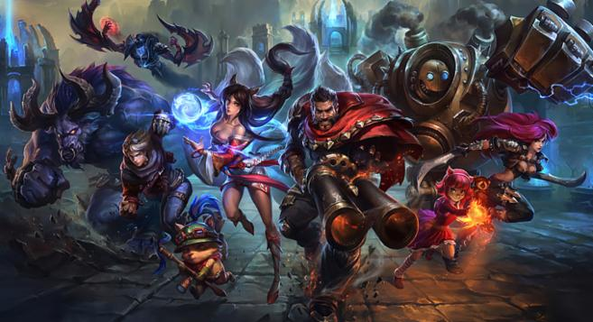
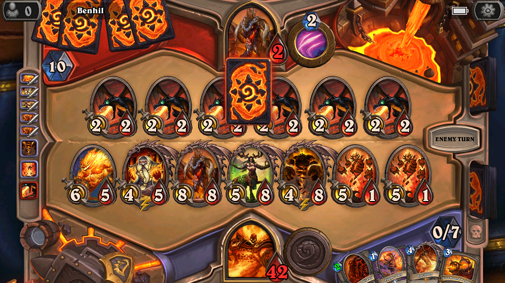
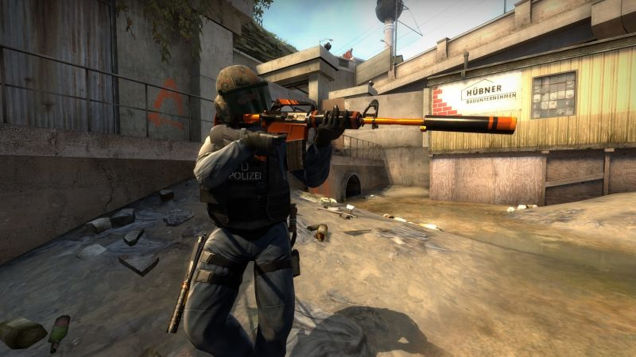
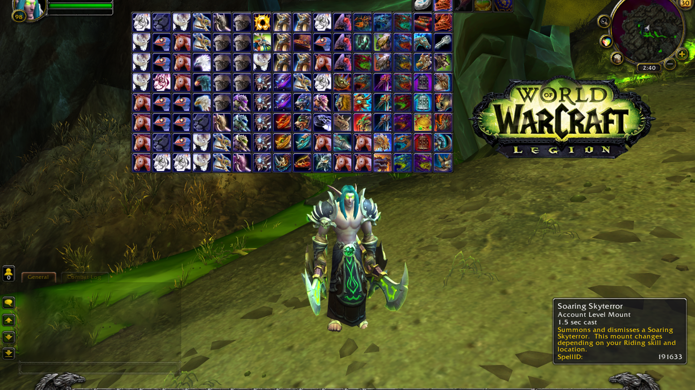
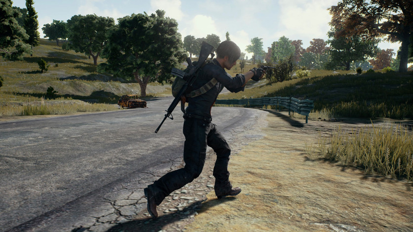

JOGOS MAIS JOGADOS DA ATUALIDADE
Veja agora uma lista com alguns dos jogos mais jogados da atualidade!
- League of Legends
Gênero: Multiplayer online battle arena
Desenvolvedora: Riot Games
Também conhecido pela sigla LOL, é uma verdadeira febre mundial, jogado por mais de 27 milhões de pessoas diariamente.
Existem campeonatos de LOL em todo mundo, e seus melhores jogadores são verdadeiras celebridades, com status de rockstars e de grandes jogadores de futebol,
como o sulcoreano Kuro, com mais de mil abates na carreira.

- Hearthstone: Heroes of Warcraft
Gênero: Jogo de Cartas On-line
Desenvolvedora: Blizzard Entertainment
Eleito recentemente o melhor jogo multiplayer pelo Google Play Awards, Hearthstone atingiu a marca de mais de 70 milhões de jogadores
online, o que o deixa folgado entre os jogos de videogame mais jogados do mundo.

- Minecraft
Gênero: Sandbox
Desenvolvedora: Mojang
Segundo jogo mais vendido do mundo em 2016, com mais de 100 milhões de unidades
comercializadas, Mincecraft é um game sui generis, sem similares no mercado, pelo menos no estilo.
Em Minecraft, o desafio é formar mundos à base de blocos quadrados, mais ou menos como em SimCity, o célebre jogo de construção de cidades.

- Counter-Strike: Global Offensive
Gênero: Tiro em primeira pessoa
Desenvolvedora: Valve
Counter Strike é um consagrado clássico de FPS (First Person Shooter),
da mesma desenvolvedora da premiada série Half Life, ambos equipados com o motor Source Engine.

- World of Warcraft
Gênero: MMORPG
Desenvolvedora: Blizzard Entertainment
Um dos jogos de videogame mais jogados do mundo e o mais jogado do gênero MMORPG,
estima-se que World of Warcraft some, atualmente, mais de 5 milhões de jogadores em todo o mundo.

- Playerunknown's Battleground
Gênero: Jogo de sobrevivência
Desenvolvedora: Bluehole Studio
Sem muito enredo para justificar o objetivo do jogo, que é sobreviver, em PlayerUnknown’s Battleground sua meta é
apenas uma: manter-se vivo, e para isso,deverá eliminar os outros jogadores que estão na ilha em que seu personagem está preso.
